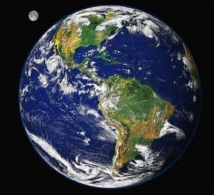
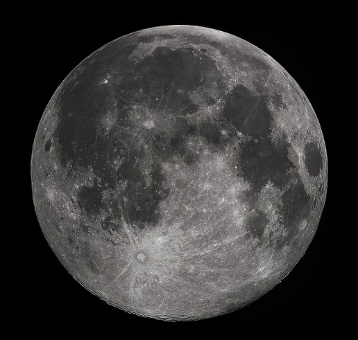
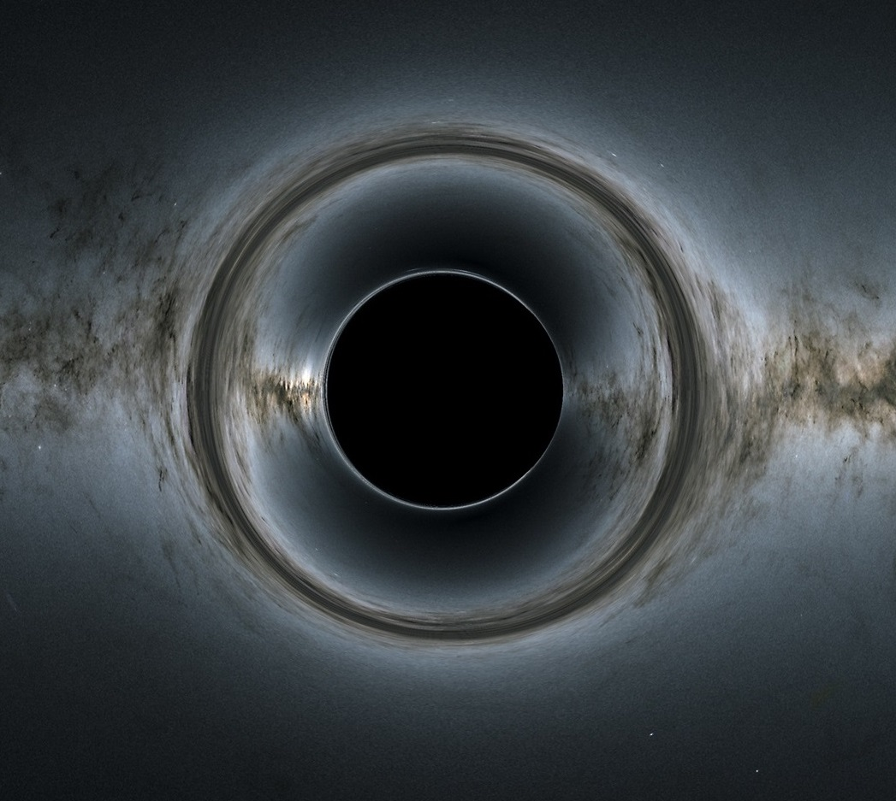
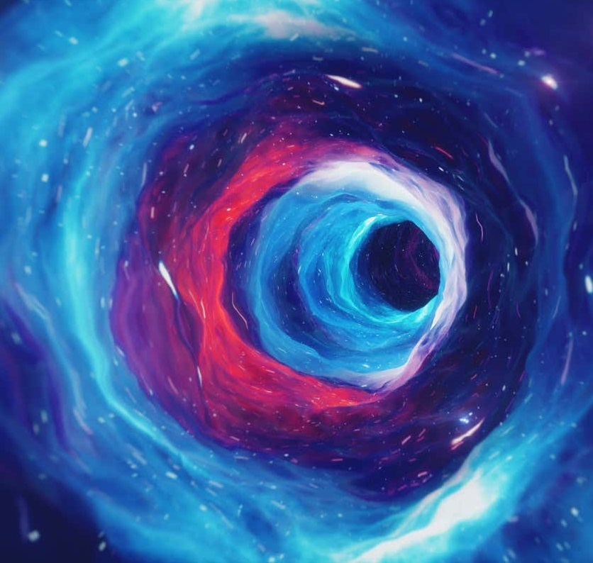
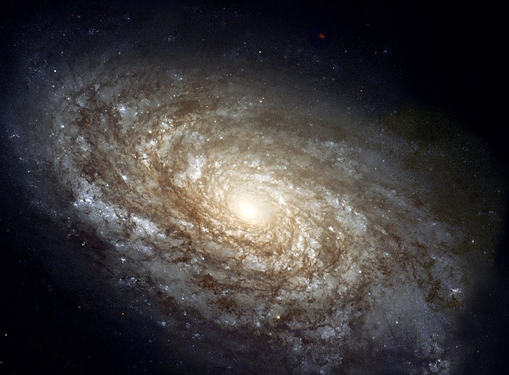
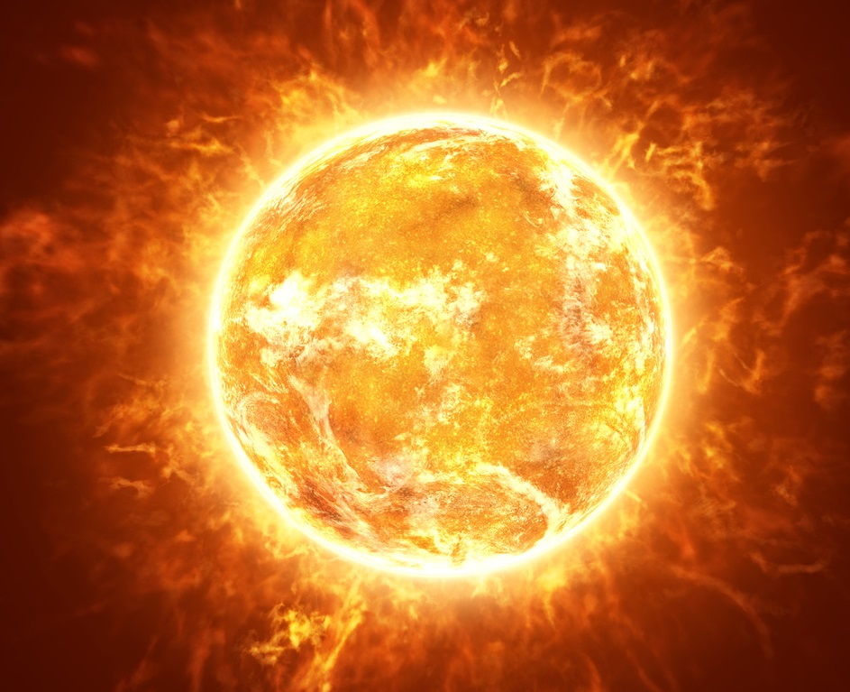

By using SPACE-CURIOSITY, you can explore the different wonders of the universe and learn how they are formed and how they work in detail.
This website will give you acurate information about the different objects in space which are listed below, it will also provide images and 3D presentations of different objects in our solar system, which will make it fun to learn. A introduction is also provided for the user to know about the topic briefly
below the topic image.

PLANETS
- A planet must always orbit a star.
- It must be big enough to have enough gravity to force it into a spherical shape.
- It should also clear the neighbourhood around its orbit.

MOONS
- A natural satellite is a smaller body which moves around a larger body.
- Moon is a natural satellites of any celestial body .
- The smaller body or the moon is held in orbit by gravity of the bigger body.

DWARF PLANETS
- A dwarf planet is a small planetary-mass object that is in direct orbit of the Sun.
- Dwarf planets are different from planets because they have not cleared their orbital paths.

BLACKHOLES
- A black hole is a place in space where gravity pulls so much that even light can not get out.
- The gravity is very strong because a lot of matter is squeezed in a very tiny space.
- Because no light can get out, people can't see black holes.

WORMHOLES
- A wormhole is a special solution to the equations describing Einstein's theory of general relativity that connects two distant points in space or time via a tunnel.
- The length of this tunnel is shorter than the distance between those two points.

GALAXIES
- Galaxies are sprawling systems of dust, gas, dark matter, and anywhere from a million to a trillion stars that are held together by gravity.
- Nearly all large galaxies are thought to also contain supermassive black holes at their centers.

STARS
- A star is an astronomical object consisting of a luminous spheroid of plasma held together by its own gravity.
- Many other stars are visible to the naked eye at night.

NEUTRON STARS
- Neutron star, any of a class of extremely dense, compact stars thought to be composed primarily of neutrons.
- Neutron stars are typically about 20 km (12 miles) in diameter.